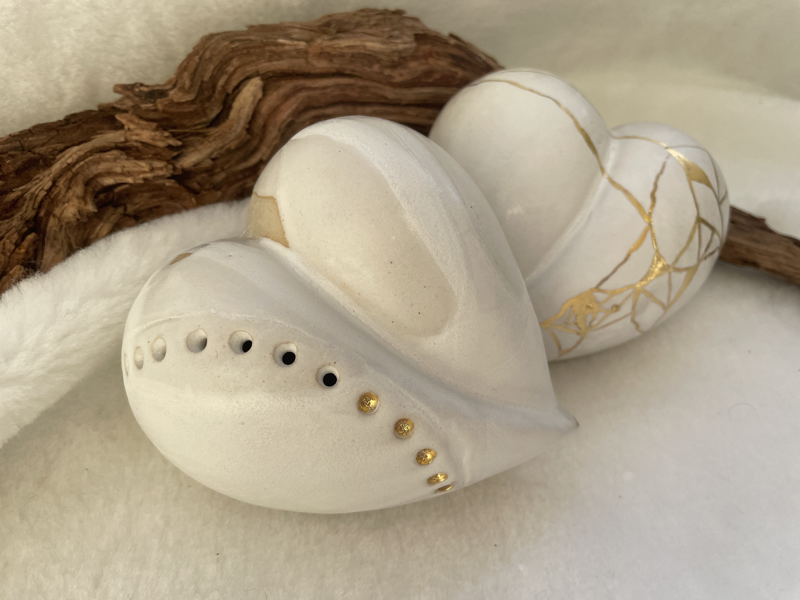
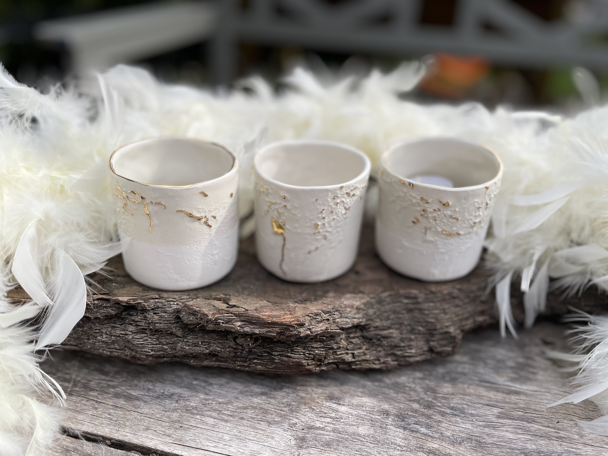
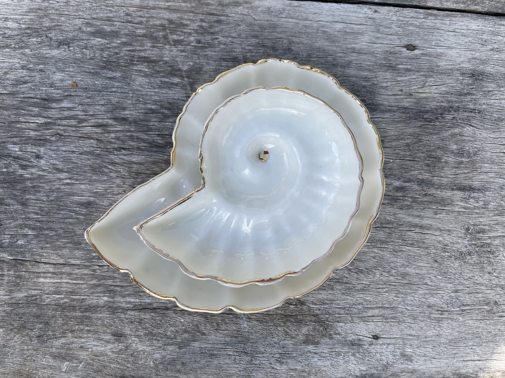
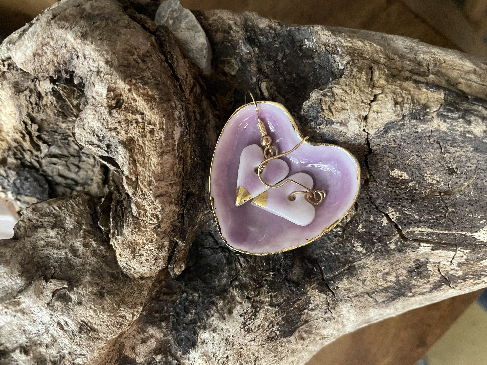
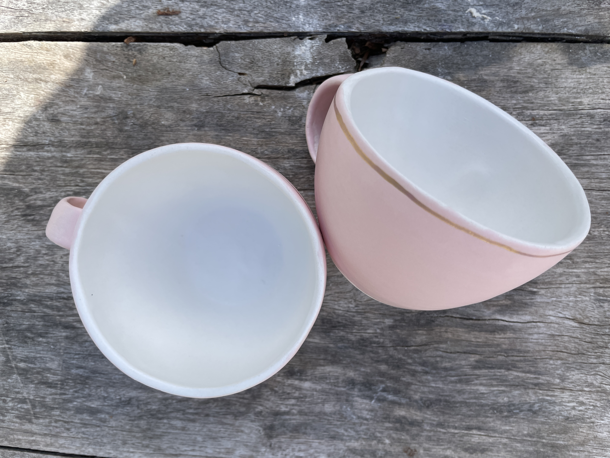
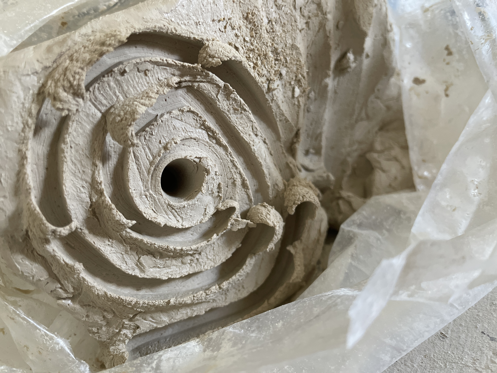
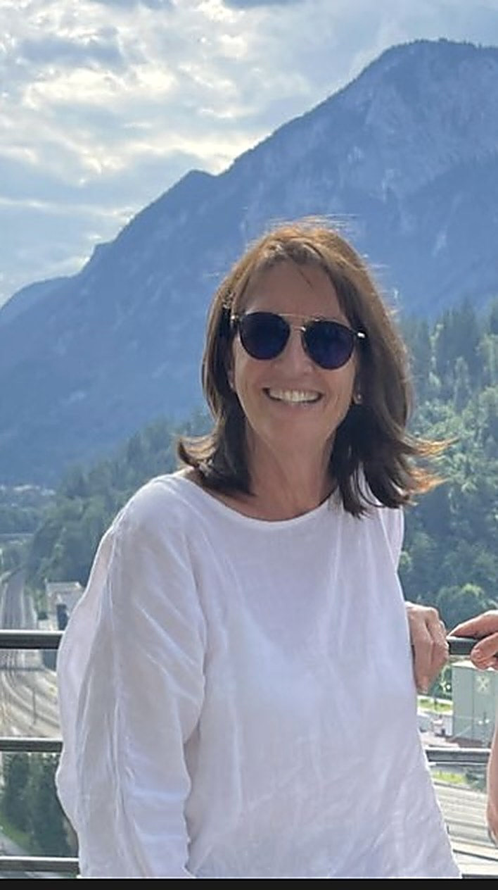

Keramik
Keramik Lyrik Gestalttherapeutische Projekte
Aktuelle Werke






Disziplinen
Ich forme Gefäße aus Steingut, Steinzeug und Porzellan und glasiere sie matt. Was mir draußen begegnet, nehme ich mit herein: Flusskiesel, nasse Erde nach dem Regen, das erste Licht am Morgen.
Mehr erfahren →Ich schreibe leise Verse über Atem und Erinnerung. Sie erscheinen als limitierte Editionen, manche spreche ich auch ein.
Mehr erfahren →Ich begleite kreatives Arbeiten als Weg zu Ausdruck, Entlastung und innerer Klarheit, zwischen Material, Gefühl und Gestaltung.
Mehr erfahren →
Über mich
Ich bin Silvia Föger – Künstlerin, Gestalterin und Suchende im Fluss des Lebens.
Meine Werke entstehen dort, wo Gefühl, Erinnerung und Zufall sich begegnen. In Ton, Farbe und Worten forme ich das, was mich innerlich bewegt – handgefertigte Momente, die Seele tragen und stille Wunder sichtbar machen.
Der Ton ist mein wichtigstes Medium. Er ist ehrlich, meditativ, kraftvoll – ein Material, das meine Emotionen aufnimmt und ihnen Gestalt schenkt. In seiner Formbarkeit finde ich Ruhe, Klarheit und einen Ausdruck, der tiefer reicht als Worte. Ergänzt durch Farbe und Schreiben entsteht ein Zusammenspiel kreativer Medien, das meine ganz persönliche Handschrift ausmacht.
Die Spirale begleitet mich als zentrales Symbol. Sie steht für Anfang und Ende, für Wandel und Heimkommen, für die Wege des Lebens, die sich winden und doch immer weiterführen. Sie taucht in meinen Arbeiten ebenso auf wie in meinem eigenen Lebensweg.
Meine Wurzeln liegen in der Pädagogik und im kreativen Begleiten von Menschen. Als Elementarpädagogin, Kreativtrainerin und Mal- und Gestaltungstherapeutin habe ich gelernt, wie heilsam kreatives Tun sein kann – als Ausdruck, als Entlastung, als Überlebensstrategie. Diese Erfahrung fließt in meine Kunst ein und prägt meine Haltung.
Heute widme ich mich in meinem neuen Lebensabschnitt – meinem „Ton-Lebensabschnitt“ – voller Hingabe dem Formgeben und dem Schreiben. Familie ist dabei mein Anker und meine Inspiration: ein Ort der Liebe, aus dem ich Kraft schöpfe und zu dem ich immer wieder zurückkehre.
Mein Anspruch an Kunst ist einfach und gleichzeitig tief:
Sie soll berühren.
Sie soll ehrlich sein.
Sie soll ein Gefühl hinterlassen, das bleibt.
In meinen Ausstellungen lade ich Menschen ein, meiner Spur zu folgen – hinein in die Spiralen des Lebens, in die Sehnsucht des inneren Kindes, in das Gute, das sich immer wieder finden lässt, selbst wenn der Lebensfluss einmal reißend wird.
Kontakt
Wenn du eine Frage hast, zu einer Arbeit, zu einem Gedichtband oder zu einem gemeinsamen Projekt, freue ich mich über deine Nachricht. Ich antworte, sobald ich im Atelier Zeit dafür finde.